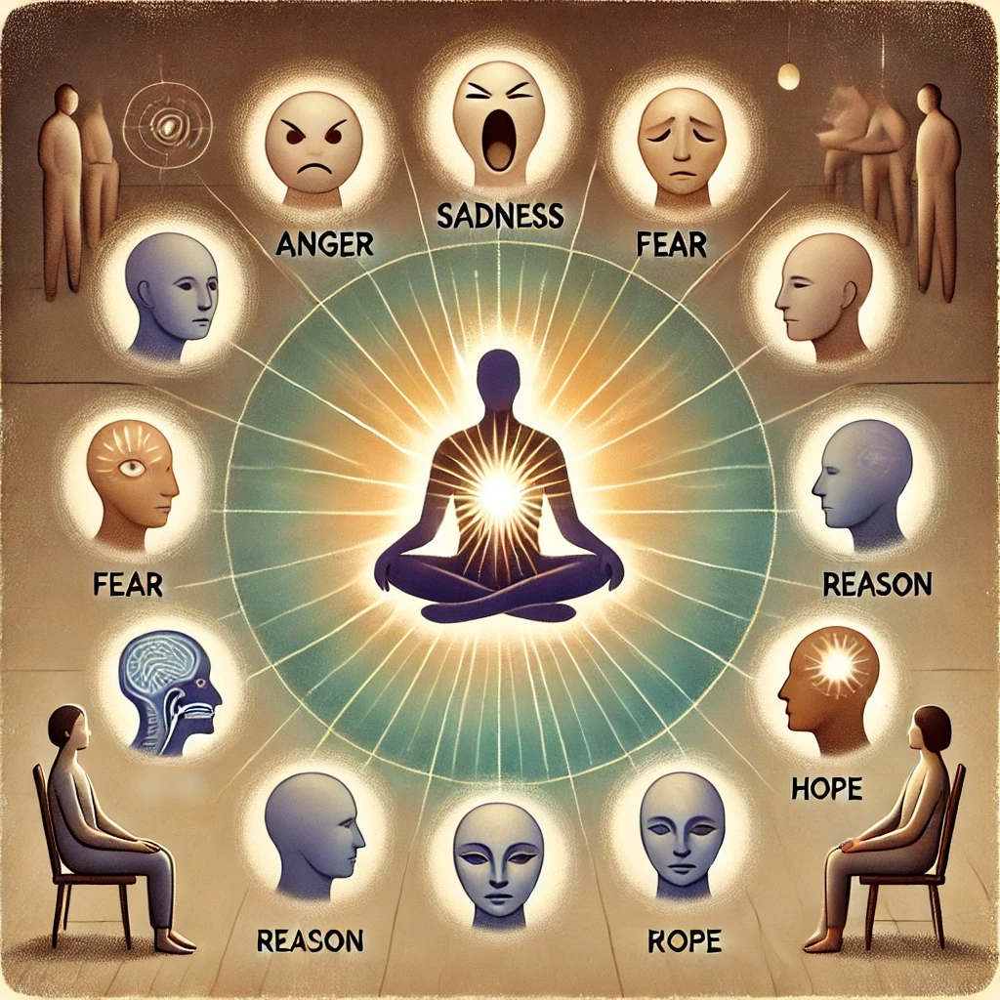
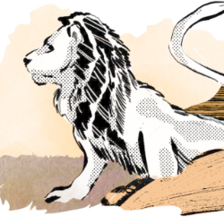

Ein Raster · eine Ordnung
Invisible hard edge.
Zwölf feste Bezugslinien verbinden Typografie, Bilder und Weißraum über die gesamte Seite.
Außenbereich rechts01 / Prinzip
1200 Pixel.
12 Spalten.
Viele Möglichkeiten.
Der Content bleibt zentriert und begrenzt. Was außerhalb liegt, ist dennoch kein Zufall: Auch die Ränder sind benannte, nutzbare Flächen.
Dieses Element sitzt bewusst außerhalb des 1200-Pixel-Contents.


Großes Bild: Spalten 1–8. Kleines Bild: Spalten 9–12. Die linke Bildkante nimmt dieselbe unsichtbare Linie wie Überschrift, Navigation und Text auf.
Full width.
Content aligned.
Die Hintergrundfläche ist grenzenlos. Der Inhalt bleibt exakt am 12-Spalten-Raster ausgerichtet.